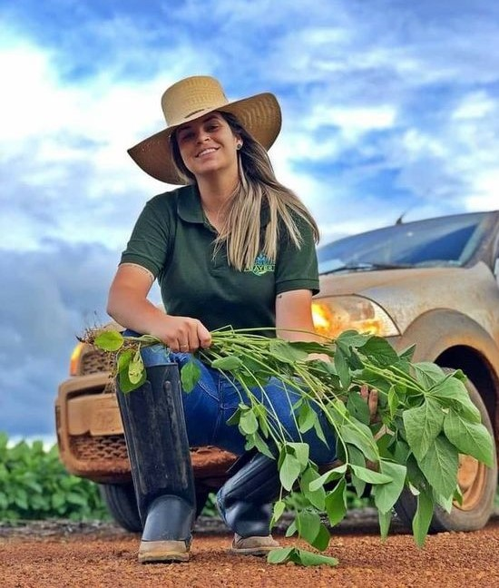
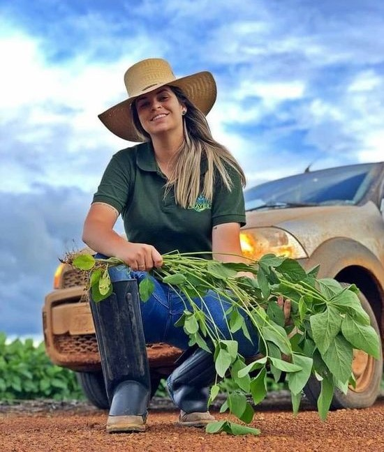

A Agronomia é a área profissional responsável pelo gerenciamento do cultivo agrícola e o conhecimento de questões relativas ao manejo do solo!
Qual é a função de um agrônomo?
Um agrônomo é um profissional que atua na área da agricultura e possui conhecimentos específicos sobre plantas, animais, solos, clima e tecnologias relacionadas à produção agrícola. Ele trabalha em diferentes etapas do processo produtivo, desde o planejamento da produção até a colheita e pós-colheita dos produtos.
 

- Os cincos agrônomos mais ricos do Brasil?
- Em primeiro lugar o Wesley Mendonça Batista, 53 anos. Com a fortuna de 22,5 bilhões USD.
- Em segundo lugar o Joesley Mendonça Batista, 51 anos.Com a fortuna de 22,5 bilhões USD.
- Em terceiro lugar a Lucia Borges Maggi, 90 anos. Com a fortuna de 6,9 bilhões USD.
- Em quarto lugar o Alceu Elias Feldmann, 73 anos. Com a fortuna de 3,7 bilhões USD.
- Em quinto lugar o Rubens Ometto Silveira Mello, 73 anos. Com a fortuna de 1,9 bilhões USD.